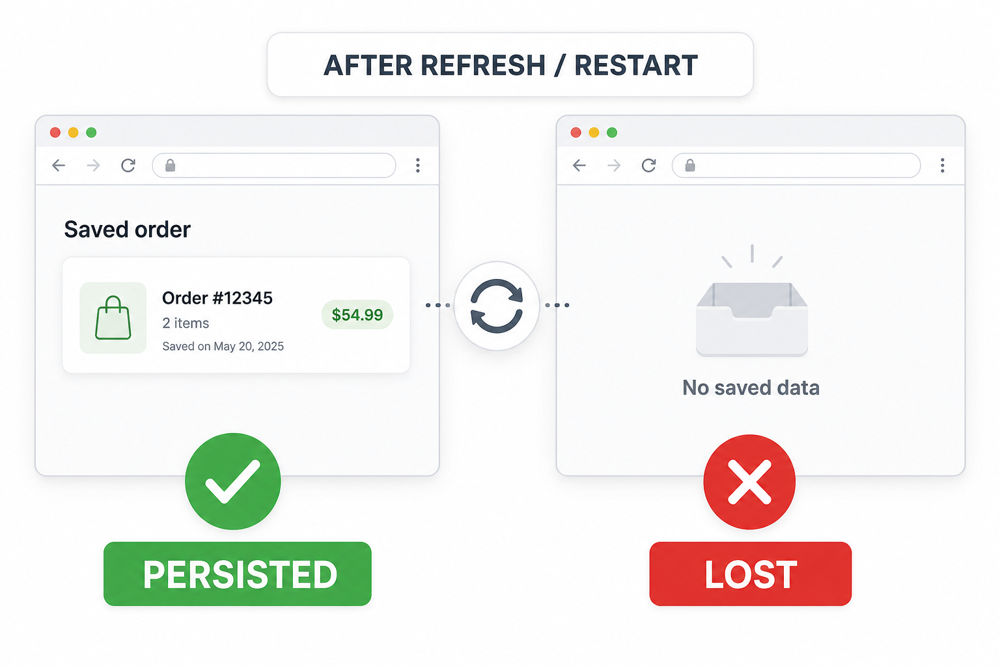
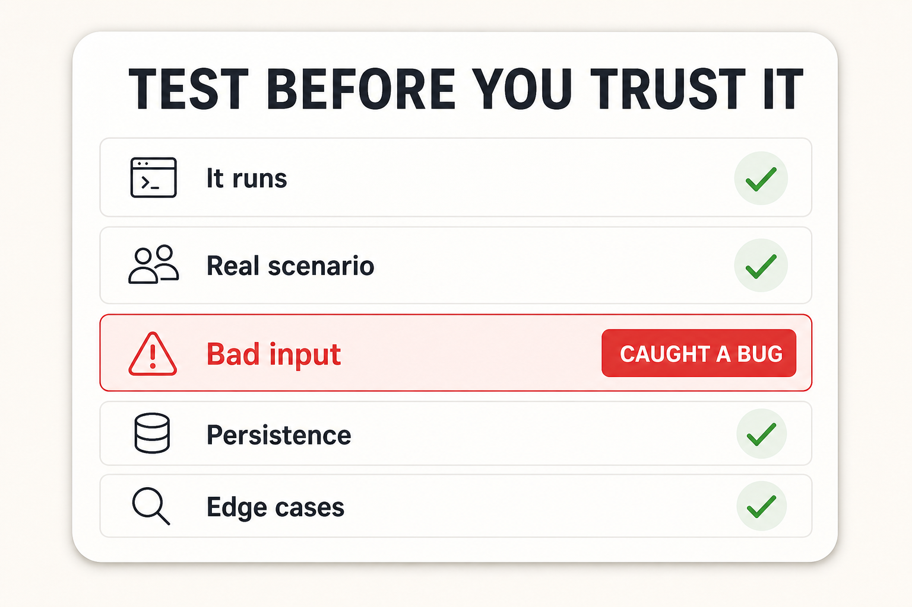

Generated code often runs before it is correct. Your job is to prove it handles data, errors, and user behavior.
A page that loads is treated as feature success.
Only the perfect input path is tested.
Refresh and restart behavior are ignored.
Use the browser like a user, not only like a developer. Tests protect the demo.
Server starts, page loads, no console errors.
Can a user finish the task?
Empty, invalid, extreme values.
Data survives refresh and server restart.
Duplicates, long text, injection attempts.
A checklist turns vague confidence into evidence.

Zero-quantity items, duplicate slugs, huge prices.
Overlapping slots, past dates, time zones.
Empty posts, very long text, HTML in input.
API-dependent pages must test failure — not just success.
“What are the ways this could fail before the demo?”

It runs · Real scenario · Bad input · Persistence · Edge cases.